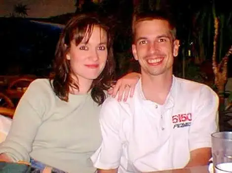

Our 22nd wedding anniversary celebration this weekend included dinner out at The Cork, the restaurant where our groom’s dinner took place way back when, and a movie.
 |
| Another dinner out in an earlier year (1999) |
{kind=link}
We happily settled on “Captain Phillips.”
{kind=link}
We both found the film invigorating, but there’s more to this story. Tucked into that movie was something no one else in the place would have noticed. Toward the beginning of the show, the captain is checking his email on the ship while listening to music. The song playing happens to be Eric Clapton’s, “Wonderful Tonight.” This was the song we danced to on our wedding night, around the same time in the evening we were watching this scene in the movie. A sign from above? A huge coincidence? Who knows? But it made us smile.
Here’s another highlight from our weekend:
{kind=link}
Oh yeah, and this, too!
[The following column was printed in The Forum newspaper, on Nov. 23 2013. Reprinted with permission.]
Living Faith: 22 years together a sign of the divine
By Roxane B. Salonen
 On Nov. 23, 1991, the sun shined brightly in Fargo, despite a forecast of snow and a northern breeze. By afternoon, the flakes came as promised but not profusely enough to block the insistent sun.
On Nov. 23, 1991, the sun shined brightly in Fargo, despite a forecast of snow and a northern breeze. By afternoon, the flakes came as promised but not profusely enough to block the insistent sun.
I remember driving around town that morning doing last-minute errands after getting my hair done, feeling abashedly conspicuous in my get-up – a wedding veil with long curls framing my face, and jeans with a casual shirt I’d wear until it was time to don the real deal.
Logistics had dictated this late-November wedding date, along with my affinity for warm, winter colors. And it was lovely – the bridesmaids’ red and black velvet dresses, our floral pieces featuring red Gerber daisies and eucalyptus. I can still smell the freshness of my bouquet, a sign that spring can flourish even in winter.
We were both 23 on that 23rd day of the month, and, though filled with knowledge from years of collegiate learning, clueless about life.
Along with all the other plans, I’d made a pact with myself to not end up a blubbering mess like some brides I’d seen, mascara streaming down their cheeks on their jaunt down the aisle. No, I’d remain composed, be the hospitable one rather than star of the show.
By evening my mouth would hurt from all my party-host smiling, but I was left feeling gratified. Many would comment on the markings of the day, including the rich music, meaningful messages and something harder to define, perhaps, but still obvious – the divine presence.
The latter had been intentional, an effort, however meager, to invite God into the relationship we’d just sealed in a sacrament.
Did I have doubts? Yes. I wondered what made us any more equipped than anyone else to beat the odds. And that question didn’t go away quietly in the coming months.
A move to a new state and so much to move through emotionally in tying together two imperfect lives lent itself to numerous trials. Many close to us worried, wondering if we’d make it, and we were among those wondering.
But somehow, despite all that threatened to break us and the inherent challenges of eventually raising one, two, three, four and five children, our marriage has persisted.
How have we remained together in this circle of family given the delicacy of the thread that seems to hold us up most days? I’ve asked this many times.
There is no human explanation. We easily could have been among the statistics of those who could not keep going. In fact, the only possibility that makes any sense at all is that when we asked God into our marriage 22 years ago, our request did not fall on deaf ears, despite human failing.
It was as impossible as many earthly endeavors are, and yet this relationship, marked by some for failure, has stood the test of time, bound by an invisible, transcendent force. Through this miracle, we’ve glimpsed the power of grace and glanced at the eternal.
In hindsight, the weather seems to have been as purposeful as other details that day; a foreshadowing of a chill that would come and go throughout our lives together, but always followed by sun melting the path before us, giving us just enough strength to move onto the next thing.
It hasn’t been easy, but through God, all things are possible. And on this day, we celebrate.